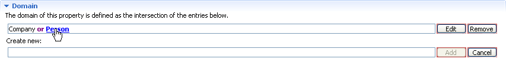
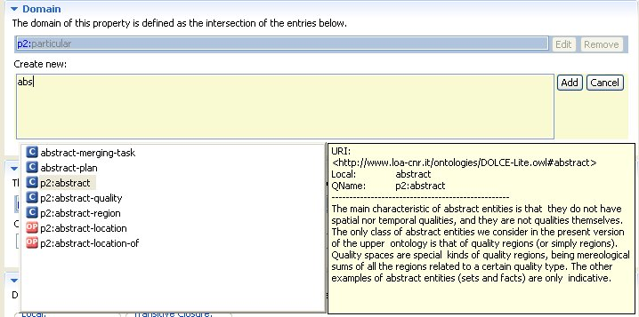
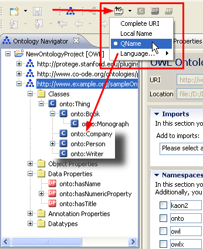

User Interface Overview
The OWL Editor consists of the following main panels:
- Ontology Navigator. The Ontology Navigator shows the ontology projects,
their corresponding ontologies, and the hierarchies of the current ontology.
- Individuals panel. The Individuals panel displays all instances of the most
recently selected class.
- Entity Properties panel. The Entity Properties panel is the main work area
for defining and modifying resources of the selected ontology.
In addition, the OWL editor is characterized by many useful user-interaction features that are described below.
Navigation
If a resource is seleted in either the Ontology Navigator or the Individuals panel, it will be loaded in the Entity Properties
panel. From there you can navigate to other resources by pressing the Control key (Ctrl) and clicking its name.

Autocomplete
The OWL Editor also features a useful autocomplete function. Autocomplete involves the OWL Editor predicting a word or phrase that
you want to type without you actually typing it completely. It is available in all text boxes while in edit mode.
You can start autocomplete by clicking Ctrl+spacebar on your keyboard or by simply starting to type; autocomplete starts within a second.
Note – Notice that autocomplete has an adaptive suggestion functionality, that is, it only shows suggestions that match
your input.

Entity Label Mode
The labels that are displayed for entities in the different fields of the user interface depend on the selected Entity Label Mode.
You can select between four different modes:
- Complete URI. Displays the complete URI of an entity (e.g., "http://www.example.org/sampleOntology#Company")
- Local Name. Displays only the local name of an entity (e.g., "Company"). This makes the ontology a lot more readable.
- QName. Displays the namespace prefix and local name of an entity (e.g., "onto:Company"). This is the recommended setting and
is especially useful when multiple ontologies are used or different namespaces are in use.
- Language. If you provide a label (rdfs:label)in a specific language for an entity,
this option displays the language label for every occurence of the entity,
thus providing multi-language support.
Note – Notice that only those languages are available which are specified in the Window >> Preferences >> Language Preferences dialog box.
